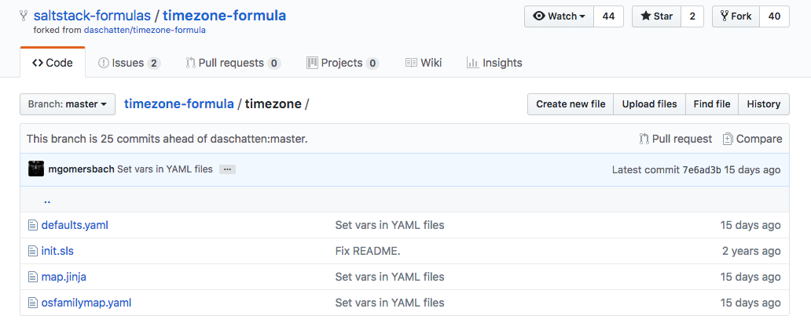
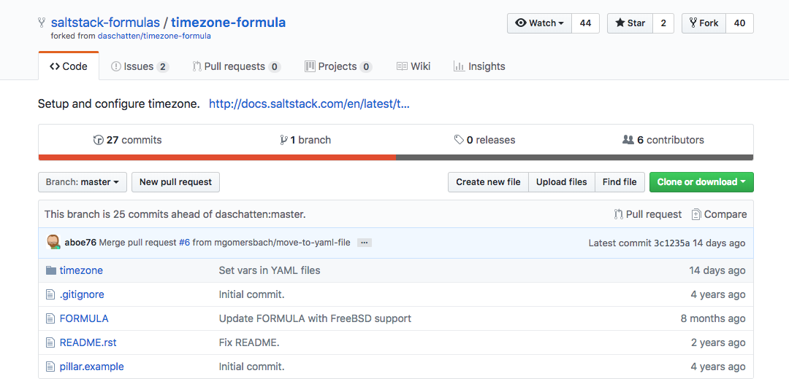
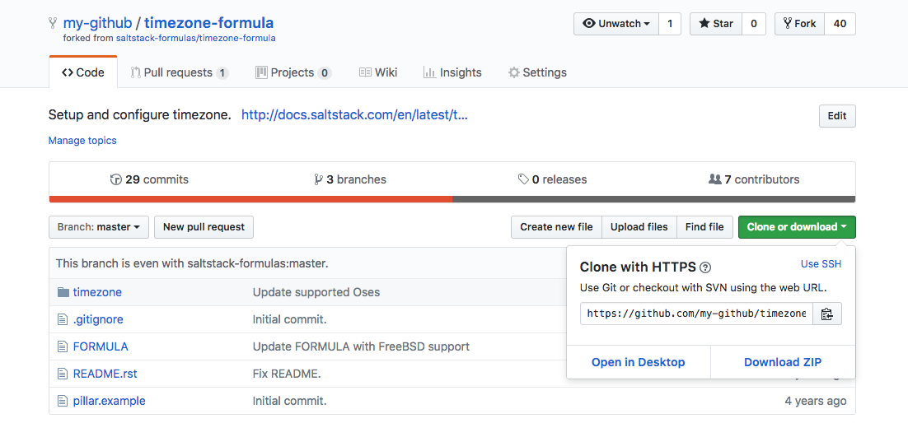
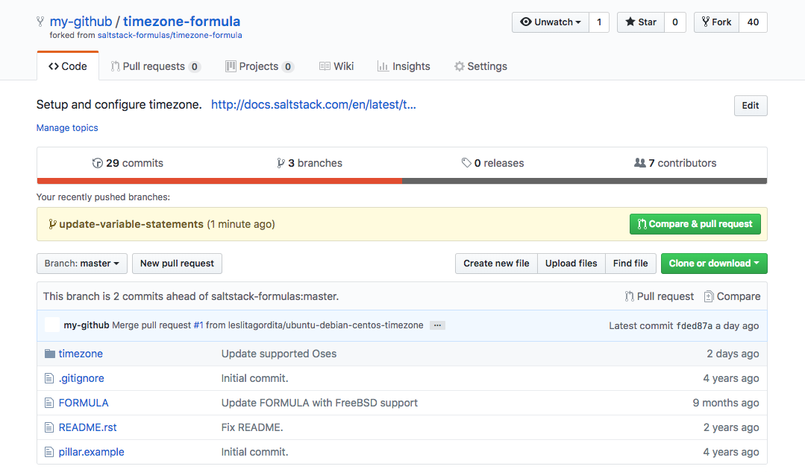
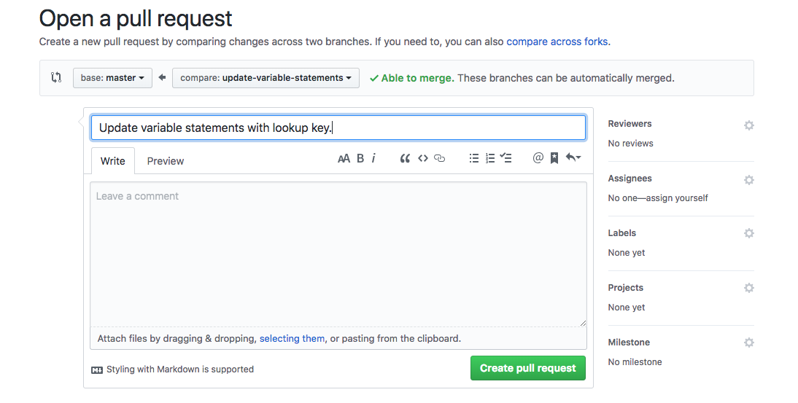
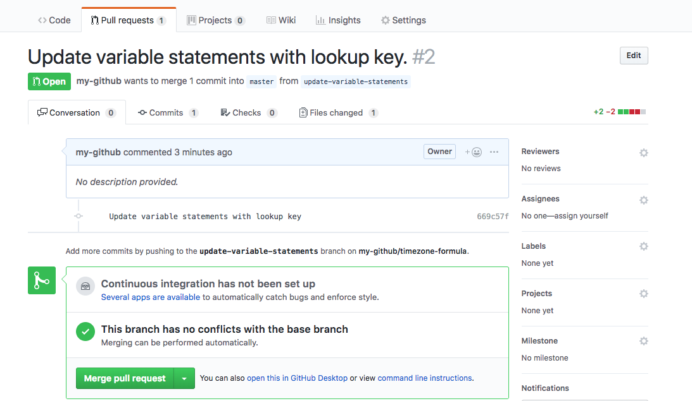

Use and Modify Official SaltStack Formulas
Updated by Linode Contributed by Linode
Salt State Files
The SaltStack Platform is made up of two primary components: A remote execution engine which handles bi-directional communication for any node within your infrastructure (master and minions), and a configuration management system which maintains all infrastructure nodes in a defined state. Salt’s configuration management system is known as the Salt State system. A Salt state is declared within a Salt State file (SLS) using YAML syntax and represents the information Salt needs to configure minions. A Salt Formula is a collection of related SLS files that will achieve a common configuration.
SaltStack’s GitHub page contains Salt formulas for commonly needed configurations, like creating and managing SSL/TLS certificates, installing and configuring the Apache HTTP Server, installing and configuring a WordPress site and many other useful formulas. You can easily add any of these pre-written formulas to your own Salt state tree using GitHub.
This guide will use GitHub to fork and modify SaltStack’s timezone formula and then use the formula on a Salt master to configure the time zone on two minions.
Before You Begin
If you are new to SaltStack, read A Beginner’s Guide to Salt to familiarize yourself with basic Salt concepts.
Download Git on your local computer by following our How to Install Git on Linux, Mac or Windows guide.
Familiarize yourself with Git using our Getting Started with Git guide.
Make sure you have configured git on your local computer.
Use the Getting Started with Salt - Basic Installation and Setup guide to set up a Salt Master and two Salt minions: one running Ubuntu 18.04 and the second running CentOS 7.
Complete the sections of our Securing Your Server to create a standard user account, harden SSH access and remove unnecessary network services.
NoteThe steps in this guide require root privileges. Be sure to run the steps below with thesudoprefix. For more information on privileges, see our Users and Groups guide.
Overview of the SaltStack Time Zone Formula
In this section, we will take a closer look at SaltStack’s timezone-formula, which can be used to configure a minion’s time zone. A high-level overview of all the formula’s state files and Jinja templates will be provided. Salt best practices recommends that formulas should separate the data that a state needs from the state itself to increase the flexibility and reusability of state files. We will observe how this is achieved in the time zone formula.
In your browser, navigate to the
timezone-formulaon SaltStack’s GitHub page. TheREADMEfile is displayed and contains basic information about the formula. It notes the following details:- The purpose of the formula: to configure the time zone.
- The available states:
timezone - The provided default values:
timezone: 'Europe/Berlin' utc: True
The repository’s
FORMULAfile includes additional details, including the supported OS families (Debian, RedHat, SUSE, Arch, FreeBSD), a summary, description and release number.Viewing the
timezone-formula, click on thetimezonedirectory to view its contents. You should see the following files:
Take a look at the contents of the
init.slsfile that defines the timezone state:- timezone/init.sls
-
1 2 3 4 5 6 7 8 9 10 11 12 13 14 15 16 17 18 19 20 21 22 23# This state configures the timezone. {%- set timezone = salt['pillar.get']('timezone:name', 'Europe/Berlin') %} {%- set utc = salt['pillar.get']('timezone:utc', True) %} {% from "timezone/map.jinja" import confmap with context %} timezone_setting: timezone.system: - name: {{ timezone }} - utc: {{ utc }} timezone_packages: pkg.installed: - name: {{ confmap.pkgname }} timezone_symlink: file.symlink: - name: {{ confmap.path_localtime }} - target: {{ confmap.path_zoneinfo }}{{ timezone }} - force: true - require: - pkg: {{ confmap.pkgname }}
Salt will interpret the name of this file as
timezone, since anyinit.slsfile in a subdirectory is referred to by the path of the directory.This state file contains three state declarations,
timezone_setting,timezone_packagesandtimezone_symlink. Below is a description of the configuration each declaration will accomplish on a Salt minion.timezone.system: This state uses Salt’s timezone state module to manage the timezone for the minion. The values fornameandutcare derived from the corresponding Salt master’s Pillar file. This is accomplished in the two variable assignment at the top of the file:{%- set timezone = salt['pillar.get']('timezone:name', 'Europe/Berlin') %}and{%- set utc = salt['pillar.get']('timezone:utc', True) %}.timezone_packages:This state ensures that the package needed to configure time zones is installed on the minion. This value is derived from theconfmapvariable that is imported from themap.jinjafile. The import is declared at the top of the file with the{% from "timezone/map.jinja" import confmap with context %}import statement. Later in this section, you will inspect themap.jinjafile.timezone_symlink: This state creates a symbolic link from the path defined innameto the location defined intarget. This state will only execute if thetimezone_packagesstate is executed successfully. This requirement is denoted by therequirestatement.
Next, inspect the
map.jinjafile:- timezone/map.jinja
-
1 2 3 4 5 6 7 8 9 10 11 12 13 14 15 16{% import_yaml "timezone/defaults.yaml" as defaults %} {% import_yaml "timezone/osfamilymap.yaml" as osfamilymap %} {% set osfam = salt['grains.filter_by']( osfamilymap, grain='os_family' ) or {} %} {% do salt['defaults.merge'](defaults, osfam) %} {%- set confmap = salt['pillar.get']( 'timezone:lookup', default=defaults, merge=True, ) %}
The
map.jinjafile allows the formula to abstract static defaults into a dictionary that contains platform specific data. The two main dictionaries are defined in the repository’stimezone/defaults.yamlandtimezone/osfamilymap.yamlfiles. Thedefaults.ymlfile serves as a base dictionary containing values shared by all OSes, while theosfamilymap.ymlfile stores any values that are different from the base values. Any file throughout the formula could make use of these dictionary values by importing themap.jinjafile. In addition, any dictionary values can be overridden in a Pillar file. Overidding dictionary values will be discussed in the Modify Your SaltStack Formula section.Open the
timezone/defaults.yamlfile and thetimezone/osfamilymap,yamlfile to view the data stored in those files:- timezone/defaults.yaml
-
1 2 3 4path_localtime: /etc/localtime path_zoneinfo: /usr/share/zoneinfo/ pkgname: tzdata
- timezone/osfamilymap.yaml
-
1 2 3 4 5 6 7Suse: pkgname: timezone FreeBSD: pkgname: zoneinfo Gentoo: pkgname: sys-libs/timezone-data
The values defined in these YAML files are used in the
init.slsfile.Open the
pillar.examplefile to review its contents:- pillar.example
-
1 2 3 4timezone: name: 'Europe/Berlin' utc: True
This file provides an example for you to use when creating your own Pillar file on the Salt master. The
init.slsfile uses the values fornameandutcin itstimezone_settingstate declaration. The value fornamewill set the time zone for your minion. The boolean value forutcdetermines whether or not to set the minion’s hardware clock to UTC.Refer to tz database time zones to view a list of all available time zones. Since Pillar files contain sensitive data, you should not version control this file. In the Create the Pillar section, you will create a Pillar file directly on your Salt master.
Now that you understand the structure of the SaltStack time zone formula, in the next section you will fork the formula’s repository on GitHub and clone the forked formula to your local computer.
Fork and Clone the SaltStack TimeZone Formula
In this section you will fork the timezone-formula from the official SaltStack GitHub page to your GitHub account and clone it to a local repository.
In your browser, navigate to the
timezone-formulaon SaltStack’s GitHub page. If you have not yet logged into your GitHub account, click on the Sign in link at the top of the page and log in.Fork the timezone-formula from the SaltStack formula’s GitHub page:

Once the formula has been forked, you will be redirected to your GitHub account’s own fork of the timezone formula.
Viewing your fork of the timezone formula, click on the Clone or download button and copy the URL:

On your local computer, clone the timezone formula:
git clone https://github.com/my-github/timezone-formula.gitMove into the
timezone-formuladirectory:cd timezone-formulaDisplay the contents of the
timezone-formuladirectory:lsYou should see the following output:
FORMULA README.rst pillar.example timezoneWhen you clone a repository, Git will automatically set the
originremote to the location of the forked repository. Verify the configured remotes for yourtimezone-formularepository:git remote -vYour output should be similar to what is displayed below, however, it will point to your own fork of the
timezone-formularepository:origin https://github.com/my-github/timezone-formula.git (fetch) origin https://github.com/my-github/timezone-formula.git (push)You can add the official SaltStack timezone formula as the
upstreamremote, so you can easily pull any changes made to the formula by the repository’s maintainers or contribute back to the project. This step is not required.git remote add upstream https://github.com/saltstack-formulas/timezone-formulaYou now have a local copy of your forked
timezone-formula. In the next section, you will modify the formula to update theinit.slsfile.
Modify Your SaltStack Formula
In this section, you will modify the time zone formula to improve how the formula follows Salt best practices related to lookup dictionaries. You can similarly modify any SaltStack formula for your infrastructure’s specific requirements, if needed.
As discussed in the Overview of the SaltStack Time Zone Formula section, the timezone/defaults.yaml file and the timezone/osfamily.map file provide dictionaries of values that are used by the init.sls state. These YAML file dictionary values can be overridden in a Pillar file that also stores any sensitive data needed by the init.sls state.
When structuring Pillar data, Salt’s official documentation states that it is a best practice to make formulas expect all formula-related parameters to be placed under a second-level lookup key. Currently, the init.sls file’s timezone and utc variables expect the Pillar data to be structured differently. You will update these two variable statements to expect a second-level lookup key.
Create a new branch in your local repository to begin modifying the timezone-formula:
git checkout -b update-variable-statementsOpen the
init.slsfile in a text editor and modify itstimezoneandutcvariable statements to match the example file:- timezone/init.sls
-
1 2 3 4 5 6 7 8 9 10 11 12 13 14 15 16 17 18 19 20 21 22 23# This state configures the timezone. {%- set timezone = salt['pillar.get']('timezone:lookup:name', 'Europe/Berlin') %} {%- set utc = salt['pillar.get']('timezone:lookup:utc', True) %} {% from "timezone/map.jinja" import confmap with context %} timezone_setting: timezone.system: - name: {{ timezone }} - utc: {{ utc }} timezone_packages: pkg.installed: - name: {{ confmap.pkgname }} timezone_symlink: file.symlink: - name: {{ confmap.path_localtime }} - target: {{ confmap.path_zoneinfo }}{{ timezone }} - force: true - require: - pkg: {{ confmap.pkgname }}
The
init.slsfile now expects a second-level lookup key when retrieving the specified Pillar values. Following this convention will make it easier to override dictionary values in your Pillar file. You will create a Pillar file in the Installing a Salt Formula section of this guide.Use Git to view which files have been changed before staging them:
git statusYour output should resemble the following:
On branch update-variable-statements Changes not staged for commit: (use "git add <file>..." to update what will be committed) (use "git checkout -- <file>..." to discard changes in working directory) modified: timezone/init.sls no changes added to commit (use "git add" and/or "git commit -a")Stage and commit the changes you made to the
init.slsfile.git add -A git commit -m 'My commit message'Push your changes to your fork:
git push origin update-variable-statementsNavigate to your timezone formula’s remote GitHub repository and create a pull request against your fork’s
masterbranch.
Make sure you select your own fork of the time zone formula as the
base fork, otherwise you will submit a pull request against the official SaltStack timezone formula’s repository, which is not the intended behavior for this example.
If you are satisfied with the changes in the pull request, merge the pull request into your
masterbranch.
In the next section, you will add your forked timezone-formula to your Salt master, create a Pillar file for the timezone-formula and apply the changes to your minions.
Install a Salt Formula
There are two ways to use a Salt Formula: you can add the formula as a GitFS Remote, which will allow you to directly serve the files hosted on your GitHub account, or you can add the formula directly to the Salt master using Git’s clone mechanism. This section will cover both ways to use Salt formulas.
Manually Add a Salt Formula to your Master
Navigate to your fork of the timezone-formula, click on the Clone or download button and copy the repository’s URL to your clipboard.
SSH into your Salt master. Replace the
usernamewith your limited user account and replace198.51.100.0with your Linode’s IP address:ssh username@198.51.100.0Create a formulas directory and go to the new directory:
mkdir -p /srv/formulas cd /srv/formulasIf your Salt master does not already have Git installed, install Git using your system’s package manager:
Ubuntu/Debian
apt-get update apt-get install gitCentos
yum update yum install gitClone the repository into the
/srv/formulasdirectory. Make sure you replacegit-usernamewith your own username:git clone https://github.com/git-username/timezone-formula.git
Add a Salt Formula as a GitFS Remote
GitFs allows Salt to serve files directly from remote git repositories. This is a convenient way to use Salt formulas with the added flexibility and power that remote version control systems provide, like collaboration and easy rollback to previous versions of your formulas.
On the Salt master, install the Python interface to Git:
sudo apt-get install python-gitEdit the Salt master configuration file to use GitFs as a fileserver backend. Make sure the lines listed below are uncommented in your master configuration file:
- /etc/salt/master
-
1 2 3fileserver_backend: - gitfs - roots
When using multiple backends, you should list all backends in the order you want them to be searched.
rootsis the fileserver backend used to serve files from any of the master’s directories listed in thefile_rootsconfiguration.In the same Salt master configuration file, add the location of your timezone formula’s GitHub repository. Ensure you have uncommented
gitfs_remote:- /etc/salt/master
-
1 2gitfs_remotes: - https://github.com/git-username/timezone-formula.git
Uncomment the gitfs_provider declaration and set its value to gitpython:
- /etc/salt/master
-
1gitfs_provider: gitpython
Restart the Salt master to apply the new configurations:
sudo systemctl restart salt-master
Add a Salt Formula to the Top File
To include your timezone formula in your Salt state tree, you must add it to your top file.
Create the
/srv/saltdirectory if it does not already exist:mkdir /srv/saltAdd the
timezonestate declared in thetimezone-formulato your top file:- /srv/salt/top.sls
-
1 2 3 4base: '*': - timezone
The example Top file declares one environment, the
baseenvironment that targets all minions and applies thetimezonestate to them. This top file could easily contain several states that already exist in your state tree, like anapachestate, awordpressstate, etc., and several environments that target different minions. Any Salt formula can be easily dropped-in to the top file and will be applied to the targeted minions the next time you run a highstate.
Create the Pillar
Create a directory to store your formula’s Pillar file:
mkdir -p /srv/pillarCreate a Pillar file to store the data that will be used by your timezone formula:
- /srv/pillar/timezone.sls
-
1 2 3 4 5 6 7 8 9timezone: lookup: {%- if grains['os_family'] == 'Debian' %} name: America/New_York {%- else %} name: 'Europe/Berlin' {%- endif %} utc: True
The
timezone.slsPillar file was created from thepillar.examplefile provided in the SaltStack timezone formula. The example was modified to add Jinja control statements that will assign a different timezone on any minion that is a Debian family OS. You can replace any of the timezonenamevalues to your preferred timezone or add additional Jinja logic, if necessary. For an introduction to Jinja, read the Introduction to Jinja Templates for Salt.You can also override any of the dictionary values defined in the
timezone/defaults.yamlortimezone/osfamilymap.yamlin the Pillar file using Salt’s lookup dictionary convention. For example, if you wanted to override thepkgnamevalue defined intimezone/defaults.yamlyour Pillar file might look like the following example:- /srv/pillar/timezone.sls
-
1 2 3 4 5 6 7 8 9 10timezone: lookup: {%- if grains['os_family'] == 'Debian' %} name: America/New_York {%- else %} name: 'Europe/Berlin' {%- endif %} utc: True pkgname: timezone
If you cloned the timezone-formula to your master instead of adding the formula as a GitFS remote, add the timezone-formula’s directory to the Salt master’s
file_rootsconfiguration:- /etc/salt/master
-
1 2 3 4 5file_roots: base: - /srv/salt/ - /srv/formulas/timezone-formula
Add the Pillar to the Pillar’s top file:
- /srv/pillar/top.sls
-
1 2 3 4base: '*': - timezone
Configure the location of the Pillar file:
- /etc/salt/master
-
1 2 3 4pillar_roots: base: - /srv/pillar
Restart the Salt master for the new configurations to take effect on the Salt master:
sudo systemctl restart salt-masterRun a highstate to your minion to apply the state defined in the timezone formula:
sudo salt '*' state.apply
Next Steps
To learn how to create your own Salt formulas and how to organize your formula’s states in a logical and modular way, read our Automate Static Site Deployments with Salt, Git, and Webhooks guide.
More Information
You may wish to consult the following resources for additional information on this topic. While these are provided in the hope that they will be useful, please note that we cannot vouch for the accuracy or timeliness of externally hosted materials.
Join our Community
Find answers, ask questions, and help others.
This guide is published under a CC BY-ND 4.0 license.